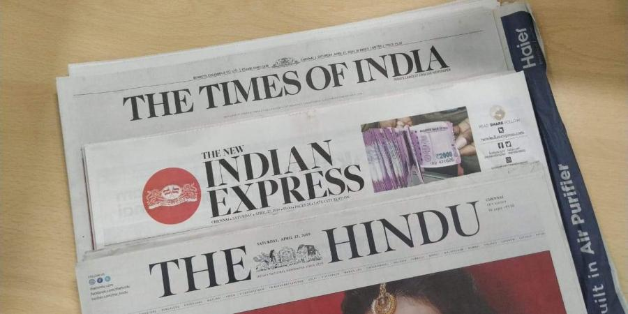

GET TO KNOW ABOUT ME:
A 20-year old aspiring person.I am kinda introvert but once I get along with a person,I will move closely with them.I'm a patient person but once I lose it,I will be uncontrollable by others.I don't do any work if I'm out of mood,but if I do,I will do it with all my heart.
SKILLS PURSUED:
INTERESTED IN:


I love reading novels and editorial columns in newspapers and expanding my knowledge in all fields and aspects.Few novels enhances ability to connect well.I also love to trek,and I often go for trekking as I live in the western ghats/malnad belts.